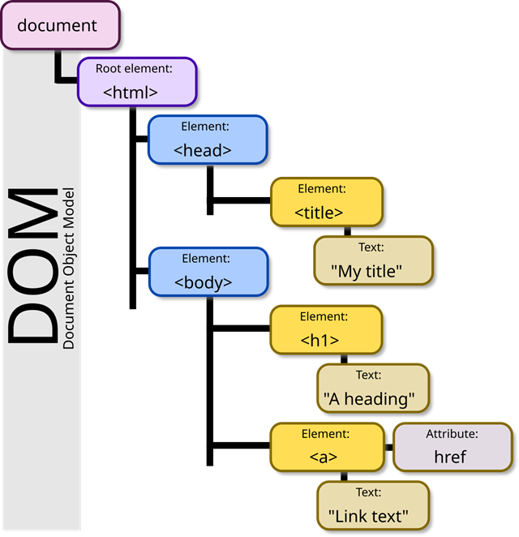

JavaScript események, DOM manipuláció (Document Object Model)
A színfalak: A Document Object Model (DOM)
Mi az a DOM?
A DOM, azaz a Document Object Model, egy programozási interfész a HTML dokumentumokhoz. Képzeld el úgy, mint a HTML-oldalad faszerkezetét, ahol minden HTML-tag egy csomópont (node) vagy objektum.

A JavaScript a DOM-on keresztül fér hozzá a weboldal elemeihez, lehetővé téve, hogy:
- Elérd az oldal bármely elemét (pl. egy gombot, egy bekezdést).
- Módosítsd az elemek tartalmát, stílusát és attribútumait.
- Új elemeket hozz létre és adj hozzá az oldalhoz.
- Reagálj a felhasználói eseményekre.
A legfontosabb szülőobjektum, amivel dolgozni fogunk, a document.
Elemek elérése
Ahhoz, hogy manipuláljunk egy elemet, meg kell szereznünk rá a hivatkozást (referenciát). Ehhez az elemeket meg kell találni a DOM-ban.
A) Elérés egyedi azonosítóval: document.getElementById()
Ez a leghagyományosabb és leggyorsabb módszer, ami abból áll, hogy egy HTML elemet az id attribútuma alapján érhetünk el. Az id attribútumnak egyedinek kell lennie a teljes dokumentumban! Ha az id egyedi, a metódus pontosan arra az elemre fog hivatkozni, amit keresünk.
<p id="bekezdes">Ezt a bekezdést szeretném javascript változóba tenni.</p>
// A HTML-ben: <p id="bekezdes"></p>
const elem = document.getElementById("bekezdes");
if (elem) {
console.log("Elem megtalálva:", elem);
} else {
console.error("Hiba: Az elem nem található!");
}
Note
if segítségével ellenőrizhető, hogy létezik-e az adott elem. Elegendő az elemet, mint ellenőrizendő kifejezést beírni. Ha null, akkor false-ként működik, ha van mögötte érték, akkor igazként.
B) Elérés CSS Szelektorokkal: querySelector() és querySelectorAll()
Mivel már otthonosan mozogsz a CSS-ben, ez a módszer hamar a kedvenceddé válhat. Ez a metódus lehetővé teszi, hogy CSS-szelektorok (pl. osztálynév, tag neve, vagy komplex szelektor) segítségével hivatkozz elemekre.
document.querySelector('szelektor'): Ez a metódus a megadott CSS szelektorral megegyező első HTML elemet adja vissza. Ha egy gombra vagy egyedi elemre van szükséged, ez a legegyszerűbb választás.const gomb = document.querySelector('button'); // Az első gombot választja ki const uzenetMezo = document.querySelector('#uzenet'); // ID-ra hivatkozás const pirosOsztaly = document.querySelector('.piros'); // Az első .piros osztályú elemetdocument.querySelectorAll('szelektor'): Ez a metódus az összes olyan elemet kiválasztja, amely megfelel a megadott szelektorunknak, és ezeket egy listában (pontosabban egy NodeList-ben) tárolja. Ez különösen hasznos, ha több azonos típusú elemen (pl. az összes gombon) akarunk műveletet végrehajtani, például egy ciklus segítségével.
const osszesgomb = document.querySelectorAll('button');
osszesgomb.forEach(function(gomb) {
console.log(gomb);
});
Note
Ha van id, akkor a getElementById-t használd a jobb teljesítmény miatt.
Eseménykezelés (Event Handling)
Az eseménykezelés azt jelenti, hogy a programunk reagál a felhasználó vagy a böngésző által kiváltott eseményekre.
Gyakori eseménytípusok
A JavaScript rengeteg beépített eseményt kezel. Ezek közül néhány alapvető:
| Esemény neve | Mikor következik be? | Forrás |
|---|---|---|
load |
A teljes oldal betöltődése után, beleértve a képeket, CSS fájlokat stb. (window esetén). | |
click |
Elemre kattintáskor. | |
mouseover |
Az egeret az elem fölé húzzuk. | |
mouseout |
Az egérmutató elhagyja az elemet. |
Eseménykezelés addEventListener() segítségével
Ez a de facto szabvány a modern webfejlesztésben.
- Szintaxis:
objektum.addEventListener("esemény", függvény);. - Fő előny: Teljesen elkülönítheted a HTML fájlt és a hozzá tartozó JavaScript programot. Ez sokkal tisztább, karbantarthatóbb kódot eredményez.
<button id="gomb">
function kezelGombKattintas() {
console.log("Gombra kattintottak!");
}
const gomb = document.getElementById("gomb");
if (gomb) {
// Eseménykezelő hozzáadása
gomb.addEventListener("click", kezelGombKattintas);
// Később eltávolíthatjuk
gomb.removeEventListener("click", kezelGombKattintas);
}
A DOM tartalmának és stílusának módosítása
Miután elértük az elemet, és tudunk rá reagálni, módosítani akarjuk a kinézetét és tartalmát.
Tartalom módosítása
| Tulajdonság | Mire használjuk? | Példa | Forrás |
|---|---|---|---|
value |
Űrlapelemek (input, select) aktuális értékének lekérdezése/beállítása. | document.getElementById("bevmez").value = "Új érték"; |
|
innerHTML |
HTML elemek belső tartalmának beállítása. HTML-tag-ek is megadhatók, így dinamikusan hozhatunk létre struktúrát. | document.getElementById("bekezdes").innerHTML = "<h1>Hello</h1>"; |
|
innerText / textContent |
HTML elemek textuális tartalmának beállítása. Csak a szöveges tartalmat kezeli, HTML tag-ek nélkül. | document.getElementById("bekezdes").innerText = "Hello"; |
Stílus módosítása
A style tulajdonsággal közvetlenül az elem inline CSS stílusait tudjuk módosítani. Fontos, hogy a CSS tulajdonságok nevei itt is camelCase-ben íródnak (pl. backgroundColor):
document.getElementById("bekezdes").style.color = "red";
document.getElementById("bekezdes").style.border = "3px solid black";
Új elemek dinamikus hozzáadása
Ha a kódunk futásakor szeretnénk új elemeket megjeleníteni, két alapvető DOM metódust használunk:
document.createElement("tag"): Létrehozza a megadott HTML elemet (pl."p"vagy"div").objektum.appendChild(gyermek_objektum): Hozzáadja az újonnan létrehozott elemet a megadott szülőobjektumhoz (pl. abody-hoz).
function myFunction() {
var par = document.createElement("p"); // Új p tag létrehozása
par.innerHTML = "Új paragrafus";
document.body.appendChild(par); // Hozzáadjuk a body végéhez
}
Elemek eltávolítása
Az elem.remove() metódus segítségével történik.
const elem = document.getElementById("torlendo");
if (elem) {
elem.remove();
console.log("Elem eltávolítva!");
}
A szöveg AI felhasználásával készült.